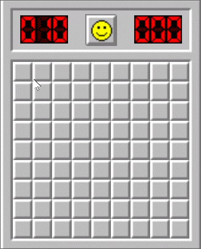
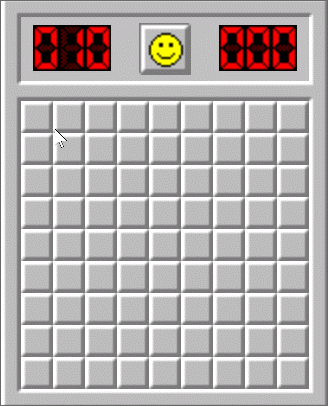

Hva bruker vi dem til?
- Release toggles
- styre hva som inkluderes i en release
- Experiment toggles
- teste ut effekten av features
- Ops toggles
- black friday
- gradvis utrulling
- Permission toggles
- styre tilgang features
Feature branches

Trunk based development

Konfigurasjon av toggles
- Hardkoding
- Command line
- Konfigurasjonsfil
- Applikasjons Databasen
- Konfigurasjonssystem (Launchdarkly, Unleash, Consul, Etcd, Zookeeper)
- Overstyre konfigurasjon
Hva skal jeg bruke da?

It depends

 

Release toggles
Statisk konfigurasjon - appsettings.json
Andre toggles
Konfigurasjonssystem
Teknisk gjeld
 Rydding av gamle toggles blir en kontinuerlig prosess
Rydding av gamle toggles blir en kontinuerlig prosess
Bruk med måte - X2

- Et av flere verktøy for å kunne gjøre kontinuerligleveranse med Trunk based development
- Muliggjør frikobling av deploy og aktivering av features
- Ingen silver bullet